측량기능사 (2011-07-31 기출문제)
1과목: 임의 구분
1. 측량의 분류에서 측량 기계에 따른 분류에 속하지 않은 것은?
- 평판 측량
- GPS 측량
- 지형 측량
- 레벨 측량
(정답률: 78%)

2. 18각형 외각의 합계는 몇 도인가?
- 2,880°
- 2,900°
- 3,240°
- 3,600°
(정답률: 80%)
3. 결합 트래버스 측량결과 위거오차 ±0.016m, 경거오차 -0.012m였다. 전측선의 길이가 1760m일 때 폐합비는?
- 1/176000
- 1/146000
- 1/118000
- 1/88000
(정답률: 54%)
4. 평판측량 방법 중에서 기준점으로부터 미지점을 시준하여 방향선을 교차시켜 도면상에서 미지점의 위치를 결정하는 방법으로 거리를 측정할 필요가 없는 것은?
- 방사법
- 전진법
- 교회법
- 기고법
(정답률: 67%)
5. 평면 삼각형 ABC에서 ∠A, ∠B와 변의 길이 a를 알고 있을 때 변의 길이 b를 구할 수 있는 식은?
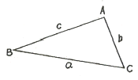
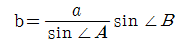
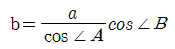
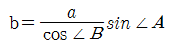
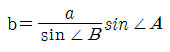
(정답률: 68%)
6. 삼각측량에서 삼각망을 구성하기 위한 선점의 조건으로 옳지 않은 것은?
- 가능한 측점 수를 적게 하는 것이 바람직하다.
- 삼각형은 직각삼각형의 형태가 가장 바람직하다.
- 후속 측량에 이용 가치가 높은 점을 선택한다.
- 삼각점간 시준이 잘되는 점을 선택한다.
(정답률: 82%)
7. 표준길이보다 5cm 긴 50m의 테이프로 두 점 간의 거리측량을 한 값이 825m 이었다면 실제 거리는?
- 825.825m
- 825.400m
- 824.600m
- 824.175m
(정답률: 69%)
8. 기선 삼각망을 설치할 때의 주의사항으로 옳지 않은 것은?
- 기선의 설정 위치는 평탄한 것이 좋다.
- 기선확대는 여러 번 확대하는 경우에도 10배 이내가 되도록 한다.
- 삼각망이 길게 될 때에는 기선의 20배 정도의 간격으로 검기선을 설치한다.
- 경사 1:5 이상의 지형에 기선을 설치한다.
(정답률: 64%)
9. 교호수준측량에 대한 설명으로 틀린 것은?
- 하천, 계곡 등 두 점 중간에 기계를 세울 수 없는 경우에 실시한다.
- 관측시에는 측점(A, B)에서 같은 거리에 기계를 세운다.
- 굴절 오차와 시준축 오차가 소거된다.
- 2점의 기압차에 따라 고저차를 구하는 방법이다.
(정답률: 57%)
10. 최획값과 경중률에 관한 설명으로 옳지 않은 것은?
- 관측값들의 경중률이 다르면 최확값을 구할 때 경중률을 고려하여 한다.
- 경중률은 관측거리의 제곱에 비례한다.
- 최확값은 어떤 관측값에서 가장 높은 확률을 가지는 값이다.
- 경중률은 표준 편차의 제곱에 반비례한다.
(정답률: 57%)
11. 수준측량에 대한 관측자의 주의 사항 중 틀린 것은?
- 측정할 때에는 항상 기포가 중앙에 오도록 한다.
- 표척과 기계와의 거리는 60m 내외를 표준으로 한다.
- 표척의 눈금은 이기점에서는 1mm까지 읽는다.
- 수준측량은 반드시 편도 측량을 원칙으로 한다.
(정답률: 71%)
12. 임의의 기준선으로부터 어느 측선까지 시계 방향으로 잰각을 무엇이라 하는가?
- 방향각
- 방위각
- 연직각
- 천정각
(정답률: 80%)
13. 트래버스 측량의 수평각 관측 방법 중 앞 측선의 연장선과 그 다음 측선이 이루는 각을 관측하는 방법을 무엇이라고 하는가?
- 교각법
- 편각법
- 방위각법
- 교회법
(정답률: 51%)
14. A, B, C 세 점으로부터 수준측량을 한 결과 P점의 관측값이 각가 P1, P2, P3였다면 P점의 최확값을 구하는 식으로 옳은 것은? (여기서 A, B, C로 부터 P점지의 거리 비 A:B:C:=2:1:2이다.)
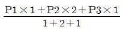
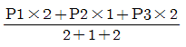
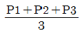
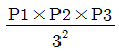
(정답률: 67%)
15. 수준측량에서 사용하는 용어에 대한 설명으로 틀린 것은?
- 표고를 이미 알고 잇는 점에 세운 수준척 눈금의 읽은을 후시라 한다.
- 표고를 알고자 하는 곳에 세운 수준척 눈금의 읽음을 전시라 한다.
- 측량 도중 레벨을 옮겨 세우기 위하여 한 측점에서 전시와 후시를 동시에 읽을 때 그 측점을 중간점이라 한다.
- 망원경 시준선의 표고를 기계고라 한다.
(정답률: 71%)
16. 축척 1:100으로 평판측량을 할 때, 앨리데이드의 외심거리 e=20mm에 의해 생기는 허용 오차는?
- 0.2mm
- 0.4mm
- 0.6mm
- 0.7mm
(정답률: 69%)
17. 전시와 후시의 거리를 같게 해도 소거되지 않는 오차는?
- 기차에 의한 오차
- 구차에 의한 오차
- 레벨의 조정 불량에 따른 오차
- 시차에 의한 오차
(정답률: 47%)
18. 「삼각망 중의 임의의 한 변의 길이는 계산해 가는 순서와는 관계없이 같은 값을 갖는다.」는 것을 삼각망의 기하학적 조건 중 어는 것에 해당 하는가?
- 각조건
- 변조건
- 측점조건
- 다항조건
(정답률: 77%)
19. 다음 중 수준측량의 관측결과와 가장 거리가 먼 것은?
- 표고
- 수심
- 좌표(X, Y)
- 지하깊이
(정답률: 65%)
20. 두점 간의 거리를 5회 측정하여 최확값이 28.182m이고 잔차의 제곱을 합한 값이 720일 때 평균 제곱근 오차는? (단, 경중률은 일정하고 잔치의 단위는 mm이다.)
- ±2mm
- ±4mm
- ±6mm
- ±8mm
(정답률: 38%)
2과목: 임의 구분
21. 임의 측선의 방위각 계산에서 진행방향 오른쪽 교각을 측정했을 때의 방위각 계산은?
- 전 측선 방위각 + 180° - 그 측점의 교각
- 전 측선 방위각 × 180° + 그 측점의 교각
- 전 측선 방위각 × 180° - 그 측점의 교각
- 전 측선 방위각 - 180° + 그 측점의 교각
(정답률: 73%)
22. 다음 중 수평각 관측에서 트랜싯의 조정 불완전에서 오는 오차를 소거하는 방법으로 가장 적합한 것은?
- 관측거리를 멀리한다.
- 관측자를 교체하여 관측하고 평균을 취한다.
- 방향각법으로 관측한다.
- 망원경 정ㆍ반위 위치에서 관측하여 그 평균을 취한다.
(정답률: 70%)
23. 전진법에 의한 평판측량에서 전 측선의 길이가 600m이고 축척 1:300도면 위의 폐합오차가 2.0mm일 떄 정밀도는?
- 1/300
- 1/500
- 1/600
- 1/1000
(정답률: 27%)
24. 방위각 1⑤° 39‘ 42“에 대한 방위는?
- N 15° 39' 42" W
- S 15° 39' 42" E
- S 74° 20' 18" E
- N 74° 20' 18" E
(정답률: 68%)
25. 그림과 같이 삼각점 A, B를 연결하는 결합 트래버스 측량을 하여 다음 결과를 얻었다. 측각오차는 얼마인가? (단, Wa=33° 54' 17", Wb=34° 36' 42", Σα=900° 42‘ 35“)
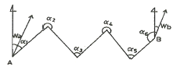
- -10“
- +10“
- -15“
- +15“
(정답률: 58%)
26. 평판을 세울 떄의 오차 중 측량결과에 가장 큰 영향을 주는 오차는?
- 수평 맞추기 오차
- 중심 맞추기 오차
- 방향 맞추기 오차
- 표준오차
(정답률: 76%)
27. 수평각 측정법 중 가장 간단한 측정 방법으로 높은 정확도를 요하지 않을 경우에 주로 사용하는 방법은?
- 단측법
- 배각법
- 방향각법
- 조합각 관측법
(정답률: 61%)
28. 삼각측량에서 변길이와 좌표의 계산에 대한 설명으로 옳지 않은 것은?
- 관측각 조정 전에 변의 길이와 좌표를 계산한다.
- sine법칙을 이용한다.
- 측점의 좌표계산은 합위거, 합경거를 구하면 된다.
- 음의 대수 계산에 대한 불편을 없애기 위하여 역대수(colog)를 사용한다.
(정답률: 29%)
29. 그림과 같이 각을 측정한 결과 ∠A=20° 15' 30", ∠B=40° 15' 20", ∠C=10° 30' 10", ∠D=71° 01' 12"이었다면 ∠C와 ∠D의 보정값으로 옳은 것은?
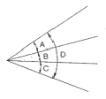
- ∠C=10° 30' 10", ∠D=71° 01' 00"
- ∠C=10° 30' 14", ∠D=71° 01' 08"
- ∠C=10° 30' 07", ∠D=71° 01' 10"
- ∠C=10° 30' 13", ∠D=71° 01' 09"
(정답률: 42%)
30. 각측정기의 망원경 배율에 대한 설명으로 옳은 것은?
- 대물렌즈의 초점거리(F)와 접안렌즈의 초점거리(f)와의 비(F/f)를 말한다.
- 접안렌즈의 초점거리(f)와 대물렌즈의 초점거리(F)와의 비(f/F)를 말한다.
- 접안렌즈로부터 기계중심까지의 거리(c)와 기계중심에서 대물렌즈지의 거리(C)와의 비 (C/c)를 말한다.
- 대물렌즈로부터 기계중심까지의 거리(C)와 기계중심에서 접안렌즈까지의 거리(c)와의 비(c/C)를 말한다.
(정답률: 50%)
31. 거리측량의 경중률에 대한 설명으로 옳은 것은? (단, 측량거리 및 기타조건은 같다.)
- 경중률은 관측 횟수에 반비례한다.
- 경중률은 관측 횟수에 비례한다.
- 경중률은 관측 횟수의 제곱에 비례한다.
- 경중률은 관측 횟수의 제곱에 반비례한다.
(정답률: 58%)
32. 트래버스의 종류 중에서 측량 결과에 대한 점검이 되지 않기 때문에 노선 측량의 답사 등에 주로 이용되는 트래버스는?
- 트래버스 망
- 폐합 트래버스
- 개방 트래버스
- 결합 트래버스
(정답률: 67%)
33. 수준측량의 야장기입방법 중 가장 간단한 방법으로 단지 두 점 사이의 고저차를 구하는 것이 주목적일 때 사용되는 것은?
- 승강식
- 고차식
- 기차식
- 교호식
(정답률: 75%)
34. 단삼각망에서 ∠A의 보정각은?
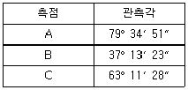
- 79° 34‘ 50“
- 79° 34‘ 55“
- 79° 34‘ 57“
- 79° 34‘ 59“
(정답률: 55%)
35. 트래버스 측량의 순서로 옳은 것은?
- 답사 → 조표 → 선점 → 관측 → 방위각 계산
- 답사 → 선점 → 조표 → 관측 → 방위각 계산
- 선점 → 답사 → 조표 → 방위각 계산 → 관측
- 선점 → 조표 → 답사 → 과측 → 방위각 계산
(정답률: 76%)
36. 지형도에서 지표의 같은 높이 지점을 연결한 곡선은?
- 도화선
- 방사선
- 등고선
- 시준선
(정답률: 82%)
37. GPS를 이용하여 시간의 오차도 미지수로 포함한 3차원 위치를 결정하는 방법은 최소 몇 대의 위성이 필요한가?
- 1대
- 2대
- 3대
- 4대
(정답률: 83%)
38. 지형을 표시하는 방법으로 하천, 항만, 해양 등에서 일정한 간격으로 표고 또는 수심을 측정하여 도상에 숫자로 기입하는 방법은?
- 점고법
- 영선법
- 음영법
- 등고선법
(정답률: 72%)
39. 노선측량에서 단곡선을 설치할 때 곡선반지름 R=150m, 교각 I=60°이다. 접선장(T.L)의 값은?
- 9.31m
- 43.30m
- 46.53m
- 86.60m
(정답률: 55%)
40. 그림과 같은 측량의 결과가 얻어졌다. 절토량과 성토량이 같은 기준면상의 높이는 얼마인가? (단, 직사각형 구역의 크기는 모두 동일하다.)
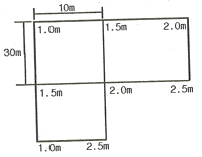
- 1.55m
- 1.65m
- 1.75m
- 1.85m
(정답률: 47%)
3과목: 임의 구분
41. 차량이 도로의 곡선부로 달이게 되면 원심력이 생겨 도로 바깥쪽으로 밀리려 한다. 이것을 방지하기 위하여 도로 안쪽보다 바깥쪽을 높여주는 것을 무엇이라 하는가?
- 레일(R)
- 플랜지(F)
- 슬랙(S)
- 캔트(C)
(정답률: 82%)
42. 면적 계산에서 삼각형으로 구분하여 측정하는 삼각형법에 속하지 않는 것은?
- 등고선법
- 삼사법
- 협각법
- 삼변법
(정답률: 67%)
43. 노선을 설정할 때 유의해야 할 사항 중 틀린 것은?
- 노선은 가능한 직선으로 한다.
- 배수가 잘되는 곳이어야 한다.
- 절토 및 성토의 운반거리는 가급적 길게 한다.
- 경사를 완만하게 한다.
(정답률: 87%)
44. 삼각형 세 변만을 알 때 면적을 구하는 방법으로 가장 적합한 것은?
- 삼변법
- 혈각법
- 삼사법
- sin 법칙
(정답률: 80%)
45. 곡선설치법 중 중앙 종거법의 이용에 대한 설명으로 옳지 않은 것은?
- 소규모 보도의 설치
- 시가지의 곡선 설치
- 기설치된 곡선의 검사
- 고속도로의 완화곡선 설치
(정답률: 50%)
46. GPS 측량의 제어(관제)부분에 대한 설명으로 틀린 것은?
- 제어부분은 위성들을 매일 같이 관리하기 위한 역할을 한다.
- 위성을 추적하여 각 위성의 상태를 체크한다.
- 위성의 각종 정보를 갱신하거나 예측하는 업무를 담당한다.
- GPS 수신기와 안테나, 자료 처리 소프트웨어 및 측량 기법들로 구성되어 있다.
(정답률: 63%)
47. 단곡선에서 교각(I)가 45°, 반지름(R)이 100m, 곡선시점(B.C)의 추가거리가 120.85m일 때 곡선종점(E.C)의 추가거리는?
- 78.53m
- 124.53m
- 199.39m
- 225.39m
(정답률: 46%)
48. 단곡선 설치에서 B.C=No.35+10.15m, E.C=No40+12.15m 일 때, 곡선장 C.L의 길이는? (단, 중심 말뚝간 거리는 20m 이다.)
- 88.15m
- 95.00m
- 98.15m
- 102.00m
(정답률: 30%)
49. 등고선 간격이 5m이고 제한 경사가 5%일 때 각 등고선의 수평 거리는?
- 100m
- 150m
- 200m
- 250m
(정답률: 45%)
50. 다음 중 한 파장의 길이가 가장 긴 GPS 신호는?
- L1
- L2
- C/A
- P
(정답률: 52%)
51. 노선측량에서 단곡선을 설치할 때 반지름이 300m이고 도로시점으로부터 곡선시점까지의 거리가 427.68, 곡선 종점까지의 거리는 554.39m일 때 종단현의 길이는? (단, 중심말뚝 간격은 20m 이다.)
- 5.61m
- 7.68m
- 12.32m
- 14.39m
(정답률: 25%)
52. A, B점의 표고가 각각 1110m, 1128m 이고 AB의 거리가 36m일 때 1122m의 등고선은 A점으로부터 몇 m의 거리에 있는가?
- 22m
- 24m
- 26m
- 28m
(정답률: 55%)
53. 다음 중 체절계산 방법이 아닌 것은?
- 지거법
- 단면법
- 점고법
- 등고선법
(정답률: 55%)
54. 그림과 같이 성토된 제방의 단면적은?
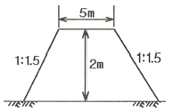
- 12.7m2
- 16.0m2
- 18.7m2
- 20.0m2
(정답률: 49%)
55. 다음 중 종단곡선으로 주로 사용되는 곡선은?
- 원곡선
- 클로소이드 곡선
- 3차 포물선
- 렘니스케이트 곡선
(정답률: 64%)
56. 다음 중 원곡선의 종류가 아닌 것은?
- 단곡선
- 복심 곡선
- 완화 곡선
- 반항 곡선
(정답률: 47%)
57. 지형측량에서 주곡선 간격의 1/2의 거리를 파선으로 표시하는 등고선은?
- 반곡선
- 간곡선
- 조곡선
- 계곡선
(정답률: 60%)
58. 총길이 L=13인 각주의 양 단면적 A1=3m2, A2=2m2, 중앙 단면적 Am=2.5m2일 때 이 각주의 체적은? (단, 각주 공식을 사용한다.)
- 32.5m3
- 33.5m3
- 36.5m3
- 37.5m3
(정답률: 43%)
59. 지형측량의 일반적인 작업순서로 옳은 것은?
- 답사 → 세부측량 → 골조측량 → 지형도제작
- 세부측량 → 골조측량 → 답사 → 지형도제작
- 답사 → 골조측량 → 세부측량 → 지형도제작
- 골조측량 → 답사 → 세부측량 → 지형도제작
(정답률: 81%)
60. GPS측량의 특징에 대한 설명으로 옳지 않은 것은?
- 3차원 측량을 동시에 할 수 있다.
- 측량 거리에 비하여 상대적으로 높은 정확도를 가지고 있다.
- 극 지방을 제외한 전 지역에서 이용할 수 있다.
- 하루 24시간 어느 시간에서나 이용이 가능하다.
(정답률: 84%)